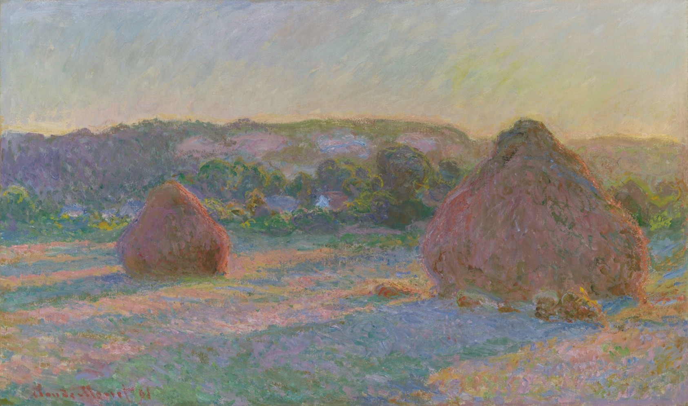

干草堆（夏末） Stacks of Wheat (End of Summer)
莫奈 · 1890/91年 · 芝加哥艺术博物馆
Claude Monet · 1890/91 · Art Institute of Chicago
图片：芝加哥艺术博物馆开放资源（CC0），公有领域 / Image: Art Institute of Chicago, CC0 public domain

发现 · Discover
吉维尼的草堆 The stacks at Giverny
法文原名是“吉维尼的草堆”。这些草堆就在莫奈家附近的田野里。
The original French title means "The Stacks at Giverny". They stood in the fields near Monet's home.
大约25幅 About 25 canvases
从1890年夏末秋初到1891年2月，莫奈大约画了25幅草堆。
Between late summer or early autumn 1890 and February 1891, Monet painted about 25 canvases of the stacks.
季节和天气 Seasons and weather
同样的草堆，他画了夏末、秋天的日暮、雪天、阴天、融雪和日落。
He painted the same stacks at the end of summer, at the end of an autumn day, in snow, on overcast days, in a thaw and at sunset.
户外和画室 Outdoors and in the studio
他先在户外画，后来又回到画室修改，让整个系列在对比中保持和谐。
He began painting outdoors, then revised the canvases in his studio, to strengthen contrasts and keep the series in harmony.
排成一排 Hung in a row
1891年5月，画商杜兰-鲁埃把其中15幅排成一排展出。观众讨论最多的，就是这种挂法。
In May 1891, his dealer Durand-Ruel showed 15 of them hung in a row. It was the installation that people talked about most.
一个月内卖光 Sold within a month
展出后，大部分作品在一个月内就卖掉了。芝加哥收藏家帕尔默夫妇买下了其中6幅。
After the exhibition, most of the paintings sold within a month. The Chicago collectors Potter and Bertha Palmer bought six.
故事 · The story
ACT I 第一幕 · 家门口的田野 The fields by his home
1890年夏末，莫奈开始画吉维尼家附近田野里的草堆。他想抓住光线、季节和天气在同一个主题上留下的变化。
At the end of summer 1890, Monet began painting the stacks in the fields near his home in Giverny. He wanted to capture how light, season and weather changed the same subject.
1890/91年 · 芝加哥艺术博物馆 / 1890/91 · Art Institute of Chicago
ACT II 第二幕 · 一个冬天 One winter
从秋天到第二年2月，他画了大约25幅：日暮、雪天、融雪、日落。他先在户外画，再回到画室修改。
From autumn into the following February, he painted about 25 canvases: end of day, snow, thaw, sunset. He began outdoors, then reworked them in his studio.
1890/91年 · 芝加哥艺术博物馆 / 1890/91 · Art Institute of Chicago
ACT III 第三幕 · 排成一排 Side by side
1891年5月，其中15幅在巴黎排成一排展出，这改变了莫奈展示作品的方式。今天，芝加哥艺术博物馆收藏了其中6幅，也把它们挂在一起。
In May 1891, fifteen of them were shown side by side in Paris, changing the way Monet presented his work. Today the Art Institute of Chicago owns six and displays them together.
1890/91年 · 芝加哥艺术博物馆 / 1890/91 · Art Institute of Chicago
同样的草堆，不同的季节。 The same stacks, a different season.
作品档案 · Artwork record
| 画家（生卒年） · Artist (dates) | 克劳德·莫奈（1840–1926） / Claude Monet (1840–1926) |
|---|---|
| 画名 · Title | 干草堆（夏末） / Stacks of Wheat (End of Summer) |
| 年份 · Date | 1890/91年 / 1890/91 |
| 材质 · Medium | 布面油画 / Oil on canvas |
| 尺寸 · Dimensions | 60 × 100.5 cm |
| 收藏地 · Collection | 芝加哥艺术博物馆 / Art Institute of Chicago |
关于画家 · About the artist
克劳德·莫奈（1840–1926），法国印象派最重要的风景画家。他生于巴黎，在勒阿弗尔长大。普法战争期间（1870–71）曾移居伦敦。1883年起住在吉维尼，晚年专注于在不同光线下反复画同一主题，比如干草堆、鲁昂大教堂和他自己的花园。
Claude Monet (1840–1926) was the leading French Impressionist landscape painter. Born in Paris, he grew up in Le Havre and moved to London during the Franco-Prussian War (1870–71). From 1883 he lived in Giverny, where he painted series of a single subject under different light: haystacks, Rouen Cathedral and his own garden.